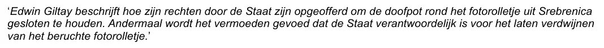

Prueba · Correo electrónico
Recomendación de los abogados de las Madres de Srebrenica, 17 de febrero de 2015
El pasaje
«Edwin Giltay describe cómo sus derechos han sido sacrificados por el Estado para mantener el encubrimiento en torno al rollo de película de Srebrenica. Una vez más se alimenta la sospecha de que el Estado es responsable de haber hecho desaparecer el tristemente célebre rollo de película». Página 1, las tres líneas de la cita propiamente dicha, en cursiva en el cuerpo del mensaje. Traducido del neerlandés; el texto original figura a continuación.
Texto original
“Edwin Giltay beschrijft hoe zijn rechten door de Staat zijn opgeofferd om de doofpot rond het fotorolletje uit Srebrenica gesloten te houden. Andermaal wordt het vermoeden gevoed dat de Staat verantwoordelijk is voor het laten verdwijnen van het beruchte fotorolletje.” El propio mensaje pone la cita entre comillas simples; aquí figura entre comillas dobles. Las tres líneas forman un único párrafo continuo. Justo encima, el remitente anuncia la cita con las palabras «Zoals toegezegd» (como se había prometido). La cita está destinada a la promoción del libro de Edwin Giltay.

Por qué importa este documento
En este mensaje, los abogados de las Madres de Srebrenica respaldaron por escrito El general del encubrimiento ya en febrero de 2015. Seguían el libro desde el principio; cinco meses después, las Madres lo citaron en su escrito de agravios contra el Estado neerlandés. Marco Gerritsen envió en el mensaje la cita que había prometido para la promoción del libro, la llamó «nuestra cita» y la firmó junto con Simon van der Sluijs, como abogados de las Madres de Srebrenica. Las palabras que la sección de voces muestra bajo sus nombres proceden de este correo electrónico.
Procedencia
- Documento
- Correo electrónico, una página, impreso desde Gmail el 24 de julio de 2026
- Remitente
- Marco R. Gerritsen, abogado, Van Diepen Van der Kroef Advocaten, Kenaupark 21, Haarlem
- Destinatario
- Coen Borgman, director y editor de SpeakEasy Publisher & Agency, a quien el mensaje se dirige con «Beste Coen» (Estimado Coen)
- Cc
- Simon van der Sluijs y Edwin Giltay
- Fecha
- 17 de febrero de 2015, 14:47
- Asunto
- «Quote ivm De Doofpotgeneraal» (cita en relación con El general del encubrimiento)
- Objetivo
- La línea de acompañamiento dice que la cita se envía, como se había prometido, para la promoción del libro de Edwin Giltay
- Firmado
- Marco R. Gerritsen y Simon van der Sluijs, encima de la línea «Advocaten van de “Moeders van Srebrenica”» (abogados de las Madres de Srebrenica)
- Archivo adjunto
- vandiepen.jpg, 22K, el logotipo del bufete, que no se cargó en el bloque de firma de la impresión pero se ve en miniatura al pie de la página
- Idioma
- Neerlandés, con la cláusula de exención de responsabilidad estándar del bufete en neerlandés y en inglés
- Páginas
- 1
- Conservado por
- Archivo del autor, que recibió el mensaje en copia
- Véase también
- Madres de Srebrenica, escrito de agravios, 7 de julio de 2015
Citado en:
- el ensayo «La prohibición cayó, el libro quedó en pie» en el capítulo (5) «Más que un libro prohibido»
- la sección de voces bajo el epígrafe «Habla el poder establecido».
Documento: https://
Modificado por última vez el 26 de julio de 2026, consultado el 27 de noviembre de 2026.

Esta página es una ficha de prueba del libro El general del encubrimiento de Edwin Giltay y del sitio web que lo acompaña.